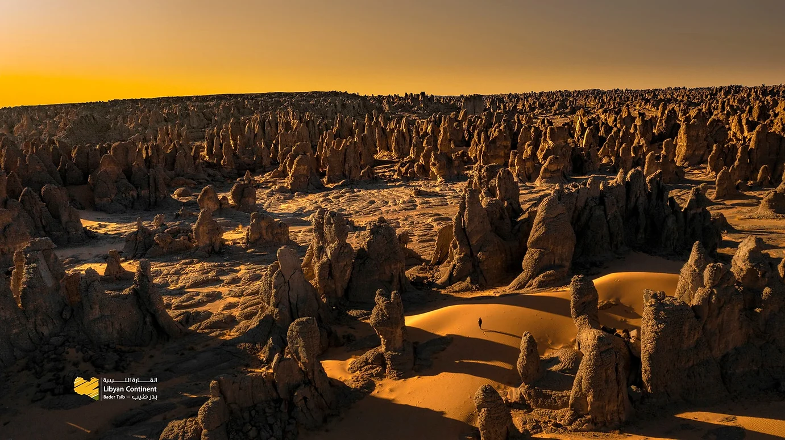

مدينة رئيسية
طرابلس
العاصمة والمدينة القديمة والأسواق والمعالم المتوسطية.
استكشف ليبيا عبر مدنها الرئيسية، مواقعها الأثرية، جبالها، صحاريها، وواحاتها، من الساحل المتوسطي إلى عمق الصحراء الكبرى.
العاصمة والمدينة القديمة والأسواق والمعالم المتوسطية.

بوابة الشرق ومسار مناسب للجبل الأخضر وشحات.

مدينة حيوية ضمن المسارات الساحلية والتجارية.

محطة انطلاق لمسارات فزان والواحات والصحراء.

قرب الطبيعة ومواقع الجبل الأخضر وشحات.
مدينة شرقية بين الساحل والمرتفعات.

حرف محلية وقرى جبلية وتجارب ثقافية.
مخزون محلي من العمارة الجبلية والتراث.

مدينة الواحة وذاكرة العمارة الصحراوية.

بوابة جنوبية قريبة من أكاكوس ومسارات الفن الصخري.

مدن واحات ومسارات داخلية في قلب ليبيا.

بحيرات وواحات وسط الصحراء ومشهد طبيعي فريد.

مدينة رومانية كبرى قرب الساحل الغربي.

مسرح روماني وموقع ساحلي متوسطي.
موقع كلاسيكي في قلب الجبل الأخضر.
فن صخري وتكوينات صحراوية مذهلة.
قرى وحرف ومسارات ثقافية في الغرب الليبي.
غابات ووديان وسواحل ومواقع أثرية قريبة.
شواطئ وممرات طبيعية ضمن مشهد الجبل الأخضر.

وجهة جيولوجية استثنائية في عمق الصحراء.
تكوينات صخرية وكهوف وكثبان ومسارات تصوير.

مدينة واحة ذات طابع ثقافي ومحلي مميز.
تجارب الأسواق التقليدية والصناعات المحلية.

ممارسات شعبية ولباس تقليدي وضيافة محلية.